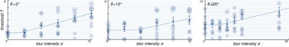

We won the Best Student Paper Award of Electronic Imaging 2026 for this research and are happy about the positive reception!
We investigate how foveated rendering affects motion-based depth perception across the visual field. Building on previous work on binocular disparity, we use a comparable experimental setup to isolate motion parallax as the sole depth cue and measure depth discrimination thresholds under varying levels of foveation.
While the impact of foveation on perceived spatial detail is well understood, its influence on other visual qualities, such as the perception of depth, remains unclear. In this work, we investigate how foveated rendering affects motion-based depth perception across the visual field. Building on previous work on binocular disparity, we use a comparable experimental setup to isolate motion parallax as the sole depth cue and measure depth discrimination thresholds under varying levels of foveation, modeled as varying intensities of spatial blur, and eccentricity.
We aim to examine the influence of spatial blur on the perceived depth from motion parallax across a range of eccentricities. We design our study to extend the perceptual model proposed in our previous project, where we examined the impact of foveation on stereoacuity. In that interest, our goal is to stay as close as possible to the original experimental paradigm, to achieve numerical comparability between the two models.
Participants observe a monoscopic representation of the ring. The observer’s movement is directly linked to the perspective from which the stimulus is rendered. Thus, by moving their head, participants perceive different monoscopic views of the stimulus that are consistent with their position in space. The shaded geometric elements in the center provide shading cues that help maintain orientation during movement.
We evaluate our experimental data by fitting a perceptual model to the measured depth discrimination thresholds. The model describes depth discrimination thresholds as a function of eccentricity and blur intensity. We find the final fit by fitting a softplus function to our three measured eccentricites, and interpolating between them.

Measured thresholds for the three examined eccentricities 0◦, 10◦, and 20◦. The individual points display the bootstrapped mean thresholds per participant and condition, with the area denoting the weight w. The diamonds display the weighted average per blur intensity, as well as the standard error.
Under comparable conditions, we find clear differences between the two depth cues. Depth from motion parallax requires larger depth differences to be perceived, and is therefore less precise than binocular disparity. While disparity remains surprisingly robust even under clearly visible blur, motion parallax is much more sensitive: performance stays stable only while blur is below the visibility threshold, and drops off quickly once it becomes noticeable. This indicates that motion-based depth cues operate close to their limits under typical foveation settings.
Perceptual models of depth from binocular disparity (left) and motion parallax (right) under increasing peripheral blur. The red curves indicate the maximum blur that does not impair depth perception, while the white curves mark the threshold at which blur becomes perceptible. A larger gap between these curves reflects greater robustness to blur. While disparity remains stable far beyond the visibility threshold, motion parallax degrades as soon as blur becomes perceptible, leaving little margin for aggressive foveation.
This project has received funding from the European Research Council under the European Union’s Horizon 2020 research and innovation program (Grant 804226, PERDY).